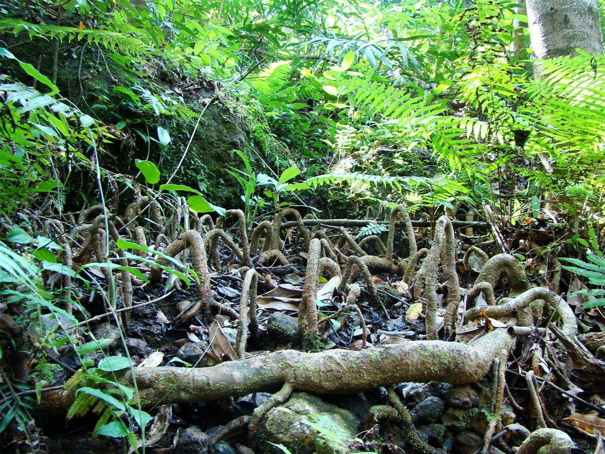
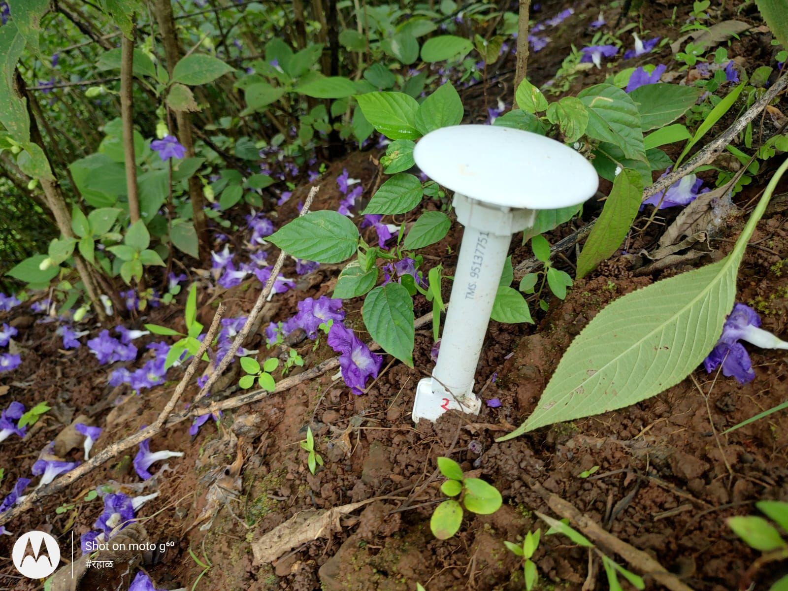
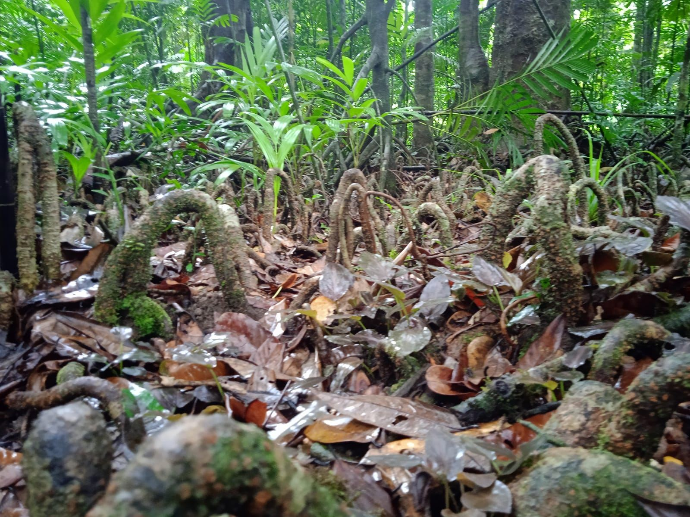
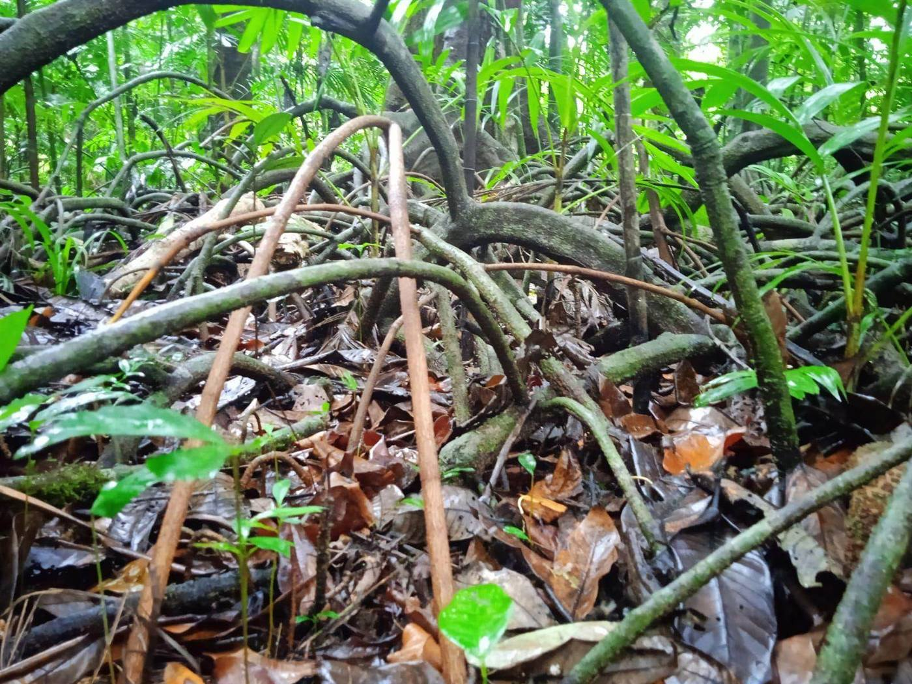
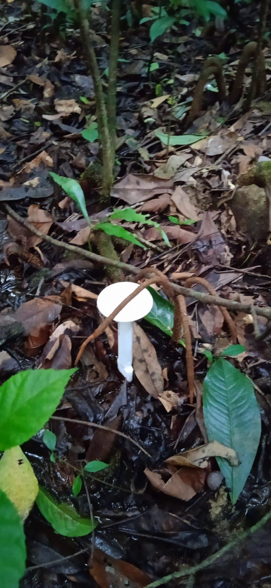
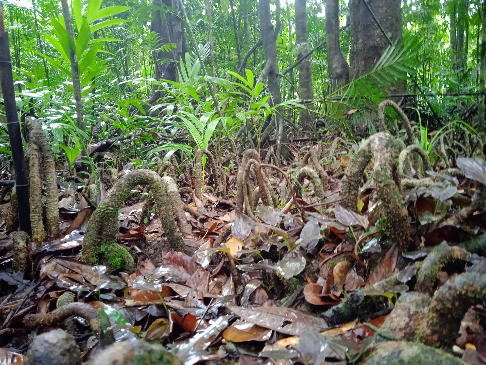

Understanding climate through various forest landscapes
Viewing the forest ecology through a micro-climate lens can help in understanding the impacts and relationships of plants and their environment. Species located in open spaces or hilltops and valleys may experience the temperature difference, and these microhabitats can act as buffering spaces for extreme temperatures.
Microclimate in Western Ghats Forests
This focusses on understanding the sensitivity of selected tropical tree species across vegetation clusters of the Central Western Ghats forests that vary drastically in their microclimate environment.
The study is working towards characterise variation in microclimates across vegetation functional clusters in the Central and Northern Western Ghats Forest.
Why it matters
The Western Ghats run for about 1,600 km along India's west coast. Along the way they change from wet evergreen rainforest to moist and dry deciduous forest, high-altitude grasslands and farmland. Rainfall, elevation and canopy cover all change sharply over short distances, so two forests a few kilometres apart can have very different climates near the ground. Climate projections are based on coarse regional data and miss this variation. We need under-canopy measurements to know which trees and forest types are most at risk as the climate warms, and which ones can buffer the change.
Research questions
- How much do air, surface and soil temperatures and soil moisture differ between vegetation clusters, and between the forest interior and open ground?
- How strongly do different forest types buffer heat extremes during the pre-monsoon dry season?
- Which tropical tree species are most sensitive to these microclimate differences?
- How do patterns change from the Central to the Northern Western Ghats?
Methods
TMS-4 loggers are installed in paired plots: inside forest, at forest edges and in open habitat. They record soil temperature (−6 cm), surface temperature (+2 cm), air temperature (+15 cm) and soil moisture every 10 minutes. We pair these records with vegetation surveys and analyse them in R to compare forest types and seasons.




Myristica swamps
Myristica swamps are unique ecosystems found in Western Ghats of India. They are located in the valleys of tropical forests with perennial source of water. This study will focus studying and to characterise the variation in microclimate across myristica swamps and its neighbouring habitats
A relic forest
Myristica swamps are freshwater swamp forests dominated by trees of the nutmeg family (Myristicaceae). The trees have dramatic stilt roots and knee roots that let them breathe in waterlogged soil. Scientists consider the swamps among the oldest forest types in the region. Today they survive only as small, scattered patches in Uttara Kannada, Shimoga, Goa and Kerala, which makes them some of the most threatened ecosystems in the Western Ghats. Because they stay wet all year, they may be important cool, humid refuges in a warming landscape.
Moisture and Diversity of forest and Swamps
Our latest initiative: we have initiated a monitoring project in the myristica swamps near forests of Sirsi and Shimoga regions. Probes inside the swamps and in the surrounding forest let us measure how much cooler and wetter the swamp interior stays through the year.
Research questions
- How different are swamp temperature and soil moisture from the surrounding forest, especially in the dry season?
- How does the swamp microclimate relate to plant and animal diversity?
- How sensitive are swamps to changes in stream flow and land use upstream?




Bioluminescent forest floor
The bioluminescent fungi in the Western Ghats are mainly found on decaying wood and rotting plant matter. The phenomenon is most visible during the monsoon season, from June to October, when the humidity and moisture levels are optimal for the fungi to thrive.
The study is trying to understand the microclimate requirements for growth of these bioluminescent fungi.
Why it matters
Glowing fungi are a striking sign of a healthy, moist forest floor. They also do real ecological work, breaking down wood and recycling nutrients. Their growth depends on narrow ranges of temperature and moisture in the leaf litter. A shorter or more erratic monsoon could shrink the window when they can grow. Recording the conditions where they occur gives us a baseline for tracking that change. It is also a great way to bring people into forest science.
Research questions
- What ranges of soil moisture and near-ground temperature match the appearance of bioluminescent fungi?
- How do canopy cover and dead-wood availability shape where the fungi appear?
- How does the timing of glowing change with monsoon onset and retreat?

From probe to insight
1. Site selection
Paired sites across forest types, edges, swamps and open habitats, chosen with local partners.
2. Continuous recording
TMS-4 loggers record temperature and soil moisture every 10 minutes, year round.
3. Ecological surveys
Vegetation and species surveys at each site connect the climate records to biodiversity.
4. Analysis & open data
Data cleaned and analysed in R, shared with collaborators and soon through our public portal.
Want to collaborate or host a probe?
We welcome partners who can host probes at new sites, share complementary data, or bring students into the project. See ways to get involved or adopt a probe.